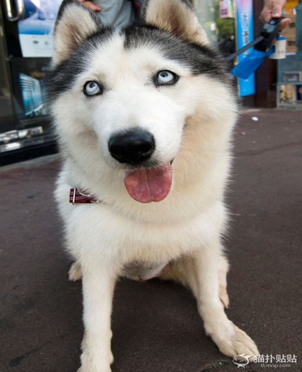

九江义犬舍身尝剧毒狗肉,百人送葬

2006年清明节前夕，在九江市贺家山陵园一座墓前，立起了一尊狗的雕像。虽然离清明节还有些时日，但每天都有不少人来到墓前，或献上花篮，或奉上祭品，默默哀悼……不知内情的人，还以为坟墓里安葬的是一位德高望重的长者。而实际上，这里安葬的是一条义犬。
三年前，人们为它专门修建了坟墓；三年后，人们又为它雕刻了石像。这条狗到底做过什么，赢得了人们如此的尊重？
舍身尝毒救了30余人！
“如果不是赛虎以身试毒，阻止了我们吃有毒的狗肉，后果真是不堪设想啊！”回忆起三年前发生在九江市林业驾校那一幕，刘师傅还心有余悸。
2003年11月28日下午，刘师傅在菜市场买了一条已经死了的狗带回驾校，食堂的厨师炖了一锅狗肉，准备晚餐时给30多位职工改善生活。肉香四溢，把一群刚出生的小狗崽们引到了食堂。一位职工看见狗崽来了，就夹了一块肉给它们吃。忽然，狗妈妈赛虎突然冲过来，用双爪紧紧地护住地上的肉，一改往日对“儿女”们的慈祥，对着小狗崽们发出凶狠急促的吼叫，不让它们吃。一条小狗试图走近妈妈撒娇，被赛虎一掌掀出门外，其他的狗崽儿见状四散逃跑。
小狗崽们离开了，赛虎对着地上的狗肉又连叫了几声，但几十个职工丝毫没有理会，继续准备吃狗肉。见众人没有反映，赛虎显得有些急躁，来回绕圈子，对着锅里的肉继续吼叫。职工们以为赛虎想多要点肉，就又夹了几块给它，但赛虎将肉拢在爪子下后，还是不吃，仍一个劲地吠。于是，大家就懒得理它了。
赛虎见食堂里的人越来越多，而且都聚在锅边等着吃肉，开始对着锅拼命狂吠，声音一阵比一阵大，一次比一次凄厉。见众人还是没有反应，赛虎猛地从地上跳起来，发出绵长而凄凉的呜咽声。听到***哀嚎，四只小狗崽儿冲了进来。赛虎用湿润的鼻子挨个儿亲吻着每只狗崽儿，伸出粉红的长舌舔净最小一只幼犬身上的污垢，然后泪水长流。但紧接着，赛虎就冲到最前面的人群里，用头撞击人们的大腿，可人们还是不能领会它的意思。
突然，赛虎坐在地上，一边流眼泪，一边凄惨哀叫。长嚎一声后，赛虎将地上的三块狗肉吃掉了……不到十分钟，赛虎就在地上痛苦地翻滚、抽搐，然后七窍流血，含泪毙命。
见此情景，几十名等待吃狗肉的职工都惊呆了！锅内狗肉竟然有毒！
事后，经卫生防*部门化验，食堂所炖狗肉竟含有“毒鼠强”，含量足以杀死一头壮牛。因为赛虎，30多人的生命才得以获救。“我以前常听义犬救人的故事，以为那不过是传说，但这样的事竟然发生在我自己身上。”三年过去了，刘师傅依旧万分感慨：“死狗是我买来的，如果出了事，我是怎么也脱不了干系的啊，是赛虎救了大家。”
陵园立碑移葬义犬
赛虎死后，其主人付文启夫妇很悲痛，他们含泪把赛虎葬于自家的菜园里。九江市贺家山陵园总经理张宁抗听说赛虎舍己救人的壮举后非常感动，他找到付文启夫妇，表示想把赛虎移葬到贺家山陵园去。
付文启夫妇很惊讶：“你这么抬举我们家赛虎，我们很感激你。但陵园是葬人的地方，怎么能葬狗呢？”张宁抗却认为：“天地万物，终归一死，能留下的只有精神，难道赛虎舍己救人的精神不足以令我们所有的人钦佩吗？”
随后，张宁抗斥资一万余元，专门请人为赛虎选墓址、做棺材、刻碑文。2003年12月10日，张宁抗请了四个工人，开着两辆汽车去为赛虎移葬。
“那天，有一百多人冒雨自发为赛虎送行，一些被救的人甚至泪流满面，几十挂鞭炮一齐鸣放，那场面真是动人啊！”回忆起赛虎的葬礼，刘师傅的声音又有些哽咽了！